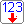
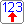

EN-poort
EN-poortVerwerkingsonderdelen nemen signalen van de invoer, bewerken ze en geven het resultaat door aan de uitvoer.
Een poort heeft ingangen links en een uitgang rechts.
EN-poortDe uitgang is alleen aan als beide ingangen aan zijn.
| Ingang A1 | Ingang A2 | Uitgang A |
|---|---|---|
| 0 | 0 | 0 |
| 0 | 1 | 0 |
| 1 | 0 | 0 |
| 1 | 1 | 1 |
De uitgang is aan als minstens één ingang aan is.
| Ingang O1 | Ingang O2 | Uitgang O |
|---|---|---|
| 0 | 0 | 0 |
| 0 | 1 | 1 |
| 1 | 0 | 1 |
| 1 | 1 | 1 |
Eén ingang; de uitgang is het omgekeerde van de ingang.
| Ingang N1 | Uitgang N |
|---|---|
| 0 | 1 |
| 1 | 0 |

TellerblokTelt de pulsen op zijn telingang en geeft de stand binair door op vier uitgangen.
| Aansluiting | Betekenis |
|---|---|
| Te | Telingang: bij elke puls gaat de teller één stap verder. |
| Re | Reset: zet de teller terug op 0. |
| 8 4 2 1 | De stand van de teller als binair getal (0 tot 15). |
Sluit de uitgangen aan op lampen of op een display om de stand te zien. Een drukknop of impulsgenerator op de telingang laat de teller lopen.

GeheugenblokEen geheugen met 32 geheugenplaatsen (adres 0 tot 31). Elke plaats bewaart een getal van 0 tot 15. Bij het plaatsen staat overal 0.
| Aansluiting | Betekenis |
|---|---|
| A 8 4 2 1 | Adresingangen bovenaan: kiezen binair de geheugenplaats. |
| Knop A16 | De knop linksboven telt 16 bij het adres op, voor de plaatsen 16 tot 31. Het gekozen adres staat in het blok (ADRES = …). |
| schrijf | Schrijfingang links: verbind hier een dipschakelaar. Druk je op de knop van de dipschakelaar, dan wordt zijn getal op het gekozen adres bewaard. |
| G 8 4 2 1 | De inhoud van de gekozen geheugenplaats als binair getal, onderaan. |
Het geheugenpaneel toont een uitgewerkt voorbeeld met een teller als adres en displays voor adres en inhoud.